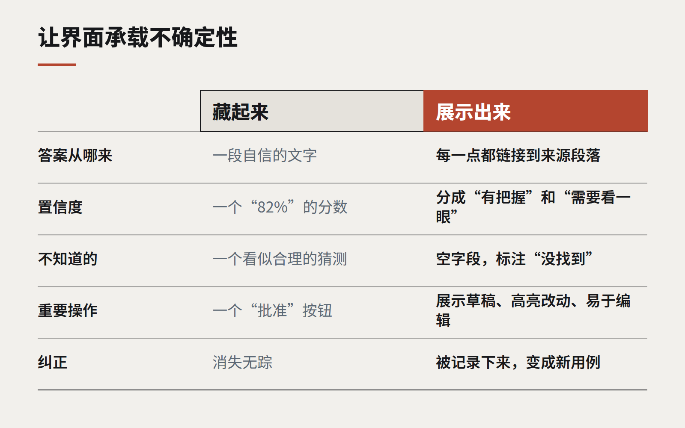

为可能出错的答案设计界面
传统软件要么正确，要么坏了。AI 功能通常是对的，有时是错的，而且听起来总是很自信。模型不肯承载的不确定性，界面必须承载起来。

在软件的大部分历史里，界面设计可以假定系统是正确的。计算器显示合计，预订系统显示预订。如果答案错了，那是 bug，bug 会被修复。用户学会了信任屏幕上显示的内容。
AI 功能打破了这个假设。一份摘要可能恰好漏掉了最关键的那句话；一张发票的合计金额可能是从错误的那一行读出来的；一条建议回复可能流畅、礼貌，却与事实不符。模型交付这一切时，用的是和正确答案一样自信的语气，于是界面成了唯一还能让不确定性被看见的地方。
这如今是企业软件中最重要的设计问题之一，而大多数产品仍然处理得很糟——要么把不确定性完全藏起来，要么给每个答案都裹上一层没人会读的免责声明。
展示来源，而不是警告
最有效的单一模式，是展示答案从哪里来。摘要中的每一点都链接到它所依据的段落；抽取出来的金额在原始文档上高亮；一条建议附上支持它的三条记录。
来源能做到免责声明做不到的事。它让用户在产生怀疑的那一刻、不离开当前流程就能快速核查。它还能自然地校准信任：几次核查都确认无误后，用户会更依赖它；一次核查出了问题，用户就知道该留心。

对重要操作，默认要求复核
当一个 AI 输出会触发某件重要的事——发送邮件、批准付款、更新客户记录——就围绕“复核”而不是“确认”来设计流程。展示草稿，高亮哪些是生成或修改的内容，让编辑和接受一样容易。一个孤零零的“批准”按钮、输出内容却折叠在下面，只会诱导人们盖橡皮图章。
用用户的语言表达置信度
数字形式的置信度分数很少有帮助；“82%”对大多数人意义不大，还会带来虚假的精确感。更好的做法：
- 按置信度排序，而不是给它贴标签：系统有把握的放一组，需要看一眼的放另一组。
- 标注具体字段，而不是整个结果：日期读得很清楚，金额有歧义。
- 允许系统说不知道。 一个标着“没找到”的空字段，远比一个看似合理的猜测有用。
让纠正产生回馈
当用户纠正了一个 AI 输出，把它记录下来。这次纠正会改进下一次回答，成为一个评测用例，并且——之后再展示给用户——建立起“系统会学习”的信心。一个修正错误后毫无下文的界面，只会教会用户：纠错毫无意义。
让 AI 在视觉上保持诚实
用一种安静而一致的方式标注 AI 生成的内容，让用户始终知道哪些是人写的、哪些不是。避免用闪光加渐变的样式把 AI 输出包装得与众不同。它应该和其他内容看起来一样——只是有清楚的标注，并且永远一键就能看到来源。